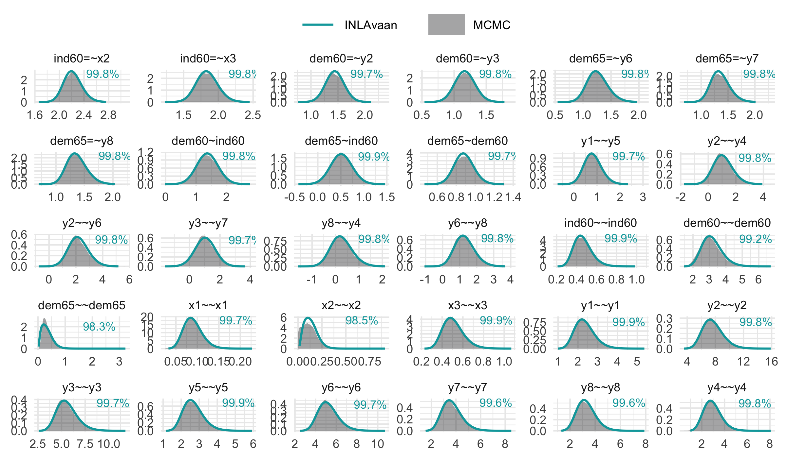

Efficient approximate Bayesian inference for Structural Equation Models.
While Markov Chain Monte Carlo (MCMC) methods remain the gold standard for exact Bayesian inference, they can be prohibitively slow for iterative model development. INLAvaan offers a rapid alternative for latent variable analysis, delivering Bayesian results at (or near) the speed of frequentist estimators. It achieves this through a custom, ground-up implementation of the Integrated Nested Laplace Approximation (INLA), engineered specifically for the lavaan modelling framework.
A familiar interface
INLAvaan is designed to fit seamlessly into your existing workflow. If you are familiar with the (b)lavaan syntax, you can begin using INLAvaan immediately.
As a first impression of the package, consider the canonical example of SEM applied to the Industrialisation and Political Democracy data set of Bollen (1989)1:
library(INLAvaan)
mod_poldem <- "
# Latent variable definitions
ind60 =~ x1 + x2 + x3
dem60 =~ y1 + y2 + y3
dem65 =~ y5 + y6 + y7 + y8
# Latent regressions
dem60 ~ ind60
dem65 ~ ind60 + dem60
# Residual correlations
y1 ~~ y5
y2 ~~ y4 + y6
y3 ~~ y7
y4 ~~ y8
y6 ~~ y8
# Fixed loading
dem60 =~ 1.5*y4
# Custom priors on latent variances
ind60 ~~ prior('gamma(1, 1)')*ind60
dem60 ~~ prior('gamma(2, 1)')*dem60
dem65 ~~ prior('gamma(1,.5)')*dem65
"
utils::data("PoliticalDemocracy", package = "lavaan")
fit <- asem(model = mod_poldem, data = PoliticalDemocracy)
#> ℹ Finding posterior mode.
#> ✔ Finding posterior mode. [37ms]
#>
#> ℹ Computing the Hessian.
#> ✔ Computing the Hessian. [32ms]
#>
#> ℹ Performing VB correction.
#> ✔ VB correction; mean |δ| = 0.156σ. [89ms]
#>
#> ⠙ Fitting 0/30 skew-normal marginals.
#> ⠹ Fitting 2/30 skew-normal marginals.
#> ⠸ Fitting 15/30 skew-normal marginals.
#> ⠼ Fitting 28/30 skew-normal marginals.
#> ✔ Fitting 30/30 skew-normal marginals. [462ms]
#>
#> ℹ Adjusting copula correlations (NORTA).
#> ✔ Adjusting copula correlations (NORTA). [101ms]
#>
#> ⠙ Posterior sampling and summarising.
#> ⠹ Posterior sampling and summarising.
#> ⠸ Posterior sampling and summarising.
#> ✔ Posterior sampling and summarising. [284ms]
#>
summary(fit)
#> INLAvaan 0.2.4 ended normally after 80 iterations
#>
#> Estimator BAYES
#> Optimization method NLMINB
#> Number of model parameters 30
#>
#> Number of observations 75
#>
#> Model Test (User Model):
#>
#> Marginal log-likelihood -1651.234
#> PPP (Chi-square) 0.514
#>
#> Information Criteria:
#>
#> Deviance (DIC) 3156.401
#> Effective parameters (pD) 28.794
#>
#> Parameter Estimates:
#>
#> Marginalisation method SKEWNORM
#> VB correction TRUE
#>
#> Latent Variables:
#> Estimate SD 2.5% 97.5% NMAD Prior
#> ind60 =~
#> x1 1.000
#> x2 2.216 0.146 1.950 2.524 0.006 normal(0,10)
#> x3 1.838 0.154 1.548 2.154 0.004 normal(0,10)
#> dem60 =~
#> y1 1.000
#> y2 1.443 0.169 1.117 1.779 0.001 normal(0,10)
#> y3 1.168 0.156 0.868 1.478 0.001 normal(0,10)
#> dem65 =~
#> y5 1.000
#> y6 1.260 0.186 0.926 1.656 0.007 normal(0,10)
#> y7 1.355 0.173 1.048 1.726 0.008 normal(0,10)
#> y8 1.367 0.176 1.056 1.746 0.008 normal(0,10)
#> dem60 =~
#> y4 1.500
#>
#> Regressions:
#> Estimate SD 2.5% 97.5% NMAD Prior
#> dem60 ~
#> ind60 1.373 0.347 0.702 2.063 0.001 normal(0,10)
#> dem65 ~
#> ind60 0.516 0.233 0.066 0.982 0.001 normal(0,10)
#> dem60 0.882 0.102 0.689 1.090 0.011 normal(0,10)
#>
#> Covariances:
#> Estimate SD 2.5% 97.5% NMAD Prior
#> .y1 ~~
#> .y5 0.331 0.382 0.146 1.644 0.005 beta(1,1)
#> .y2 ~~
#> .y4 0.217 0.667 -0.217 2.405 0.004 beta(1,1)
#> .y6 0.347 0.728 0.901 3.758 0.011 beta(1,1)
#> .y3 ~~
#> .y7 0.225 0.651 -0.136 2.420 0.005 beta(1,1)
#> .y8 ~~
#> .y4 0.070 0.454 -0.579 1.206 0.003 beta(1,1)
#> .y6 ~~
#> .y8 0.307 0.583 0.231 2.519 0.005 beta(1,1)
#>
#> Variances:
#> Estimate SD 2.5% 97.5% NMAD Prior
#> ind60 0.458 0.089 0.311 0.657 0.003 gamma(1,1)
#> .dem60 3.132 0.604 2.116 4.475 0.001 gamma(2,1)
#> .dem65 0.325 0.190 0.058 0.771 0.037 gamma(1,.5)
#> .x1 0.088 0.021 0.053 0.135 0.006 gamma(1,.5)[sd]
#> .x2 0.131 0.066 0.031 0.279 0.031 gamma(1,.5)[sd]
#> .x3 0.501 0.099 0.338 0.723 0.003 gamma(1,.5)[sd]
#> .y1 2.321 0.496 1.496 3.430 0.004 gamma(1,.5)[sd]
#> .y2 7.547 1.432 5.131 10.720 0.003 gamma(1,.5)[sd]
#> .y3 5.518 1.071 3.739 7.922 0.002 gamma(1,.5)[sd]
#> .y5 2.639 0.550 1.725 3.869 0.005 gamma(1,.5)[sd]
#> .y6 5.158 0.957 3.542 7.279 0.002 gamma(1,.5)[sd]
#> .y7 3.627 0.784 2.312 5.374 0.006 gamma(1,.5)[sd]
#> .y8 3.247 0.731 1.997 4.852 0.007 gamma(1,.5)[sd]
#> .y4 2.910 0.761 1.613 4.580 0.011 gamma(1,.5)[sd]Validation against MCMC
Computation speed is valuable only when accuracy is preserved. Our method yields posterior distributions that are visually and numerically comparable to those obtained via MCMC (e.g., via blavaan/Stan), but at a fraction of the computational cost.
The figure below illustrates the posterior density overlap for the example above. The percentages refer to the one minus the Jensen-Shannon distance, which gives a measure of similarity between two probability distributions.
# install.packages("blavaan")
library(blavaan)
fit_blav <- bsem(model = mod_poldem, data = PoliticalDemocracy, seed = 2026)
res <- INLAvaan:::compare_mcmc(fit_blav, INLAvaan = fit)
print(res$p_compare)
Installation
Install the CRAN version of INLAvaan using:
install.packages("INLAvaan")Alternatively, install the development version of INLAvaan from GitHub using:
# install.packages("pak")
pak::pak("haziqj/INLAvaan")Optionally2, you may wish to install INLA. Following the official instructions given here, install the package by running this command in R:
install.packages(
"INLA",
repos = c(getOption("repos"),
INLA = "https://inla.r-inla-download.org/R/stable"),
dep = TRUE
)Citation
There are two papers related to INLAvaan and its underlying methodology. To cite INLAvaan in publications, consider citing both.
To cite the methodological contribution exclusively, please cite:
Jamil, H., & Rue, H. (2026). Approximate Bayesian inference for structural equation models using integrated nested Laplace approximations (2603.25690 [stat.ME]). arXiv. https://doi.org/10.48550/arXiv.2603.25690
To cite the software implementation and workflows, please cite:
Jamil, H., & Rue, H. (2026). Implementation and workflows for INLA-based approximate Bayesian structural equation modelling (2604.00671 [stat.CO]). arXiv. https://doi.org/10.48550/arXiv.2604.00671
BibTeX entries for LaTeX users:
@Misc{jamil2026approximate,
title = {Approximate Bayesian inference for structural equation models using integrated nested Laplace approximations},
author = {Haziq Jamil and Håvard Rue},
year = {2026},
number = {2603.25690 [stat.ME]},
eprint = {2603.25690},
primaryclass = {stat.ME},
publisher = {arXiv},
doi = {10.48550/arXiv.2603.25690},
abstract = {Markov chain Monte Carlo (MCMC) methods remain the mainstay of Bayesian estimation of structural equation models (SEM); however they often incur a high computational cost. We present a bespoke approximate Bayesian approach to SEM, drawing on ideas from the integrated nested Laplace approximation (INLA; Rue et al., 2009, J. R. Stat. Soc. Series B Stat. Methodol.) framework. We implement a simplified Laplace approximation that efficiently profiles the posterior density in each parameter direction while correcting for asymmetry, allowing for parametric skew-normal estimation of the marginals. Furthermore, we apply a variational Bayes correction to shift the marginal locations, thereby better capturing the posterior mass. Essential quantities, including factor scores and model-fit indices, are obtained via an adjusted Gaussian copula sampling scheme. For normal-theory SEM, this approach offers a highly accurate alternative to sampling-based inference, achieving near-'maximum likelihood' speeds while retaining the precision of full Bayesian inference.},
archiveprefix = {arXiv},
copyright = {Creative Commons Attribution Non Commercial Share Alike 4.0 International},
}
@Misc{jamil2026implementation,
title = {Implementation and workflows for INLA-based approximate Bayesian structural equation modelling},
author = {Haziq Jamil and Håvard Rue},
year = {2026},
number = {2604.00671 [stat.CO]},
eprint = {2604.00671},
primaryclass = {stat.CO},
publisher = {arXiv},
doi = {10.48550/arXiv.2604.00671},
abstract = {Bayesian structural equation modelling (BSEM) offers many advantages such as principled uncertainty quantification, small-sample regularisation, and flexible model specification. However, the Markov chain Monte Carlo (MCMC) methods on which it relies are computationally prohibitive for the iterative cycle of specification, criticism, and refinement that careful psychometric practice demands. We present INLAvaan, an R package for fast, approximate Bayesian SEM built around the Integrated Nested Laplace Approximation (INLA) framework for structural equation models developed by Jamil & Rue (2026, arXiv:2603.25690 [stat.ME]). This paper serves as a companion manuscript that describes the architectural decisions and computational strategies underlying the package. Two substantive applications -- a 256-parameter bifactor circumplex model and a multilevel mediation model with full-information missing-data handling -- demonstrate the approach on specifications where MCMC would require hours of run time and careful convergence work. In constrast, INLAvaan delivers calibrated posterior summaries in seconds.},
archiveprefix = {arXiv},
copyright = {Creative Commons Attribution Non Commercial Share Alike 4.0 International},
}License
The INLAvaan package is licensed under the GPL-3.
INLAvaan: Bayesian Latent Variable Analysis using INLA
Copyright (C) 2026 Haziq Jamil
This program is free software: you can redistribute it and/or modify
it under the terms of the GNU General Public License as published by
the Free Software Foundation, either version 3 of the License, or
(at your option) any later version.
This program is distributed in the hope that it will be useful,
but WITHOUT ANY WARRANTY; without even the implied warranty of
MERCHANTABILITY or FITNESS FOR A PARTICULAR PURPOSE. See the
GNU General Public License for more details.
You should have received a copy of the GNU General Public License
along with this program. If not, see <http://www.gnu.org/licenses/>.